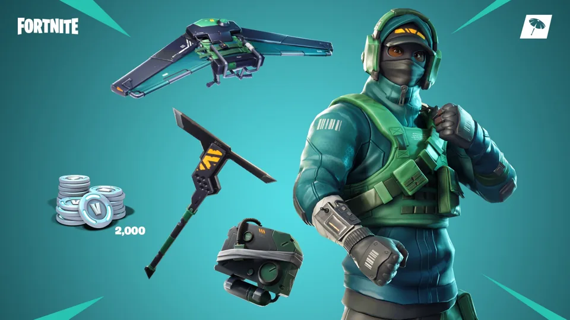
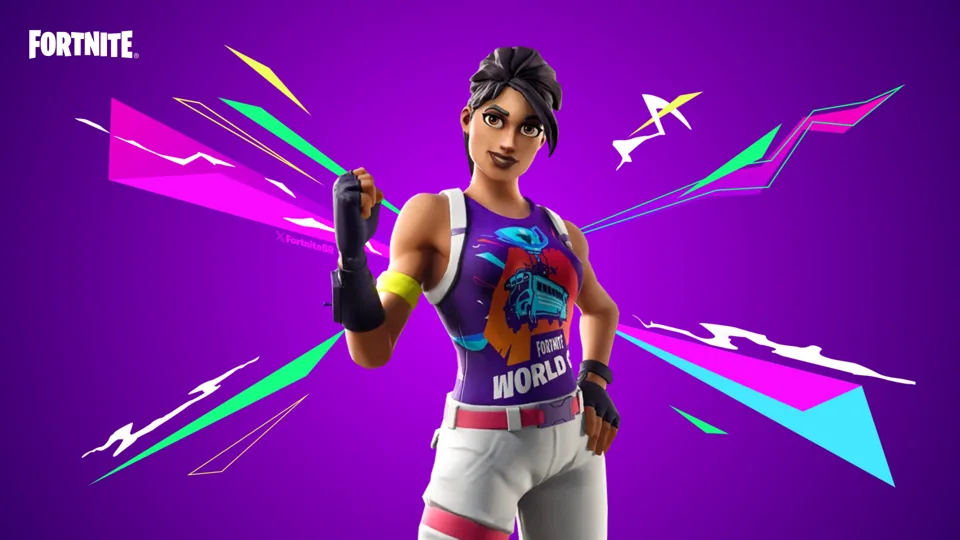
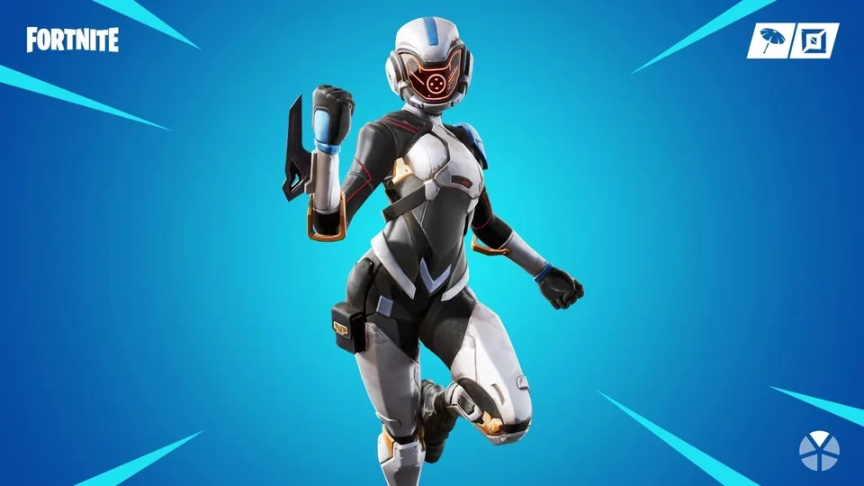
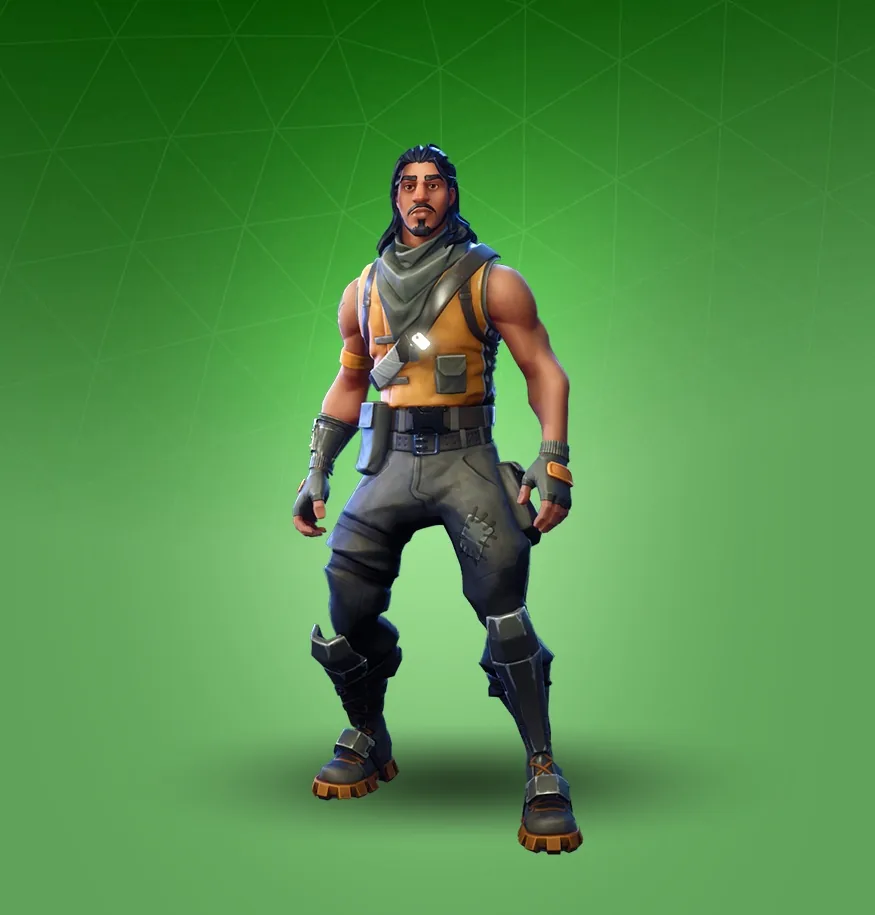
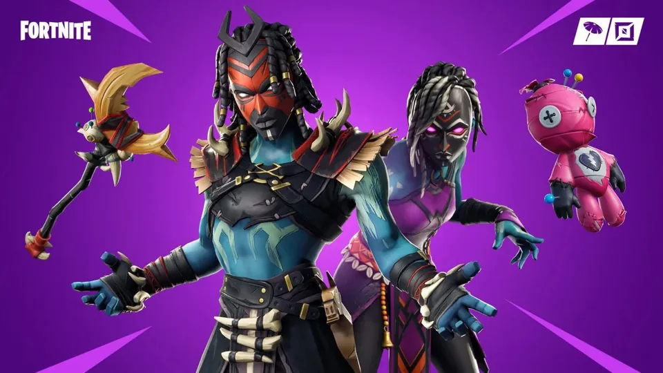

Reflex

Introduzido na 6ª temporada do Capítulo 1 em parceria com a NVIDIA, esse personagem só apareceu duas vezes na loja: no seu lançamento, em novembro de 2018, e depois em março de 2019
World Warrior
Lançada em comemoração à World Cup de Fortnite em 2019, essa skin apareceu durante três dias seguidos na loja em julho daquele ano e nunca mais, para a tristeza dos jogadores
Paradigma
Uma das integrantes d'Os Sete, personagens essenciais para a história de Fortnite e interpretada por Brie Larson, Paradigma deu oi - e tchau - bem rápido. Apareceu na Temporada X na loja, em outubro de 2019, e não retornou desde então.
Tracker
Skin bastante simples, mas que por alguma razão não volta à loja desde novembro de 2019. Antes disso, Tracker era uma das skins mais antigas do Fortnite, aparecendo na loja pela primeira vez durante a 1ª temporada, em novembro de 2017.
Shaman
Desde dezembro de 2019 Shaman não retorna à loja, e, antes disso, havia ficado à venda por apenas quatro vezes.